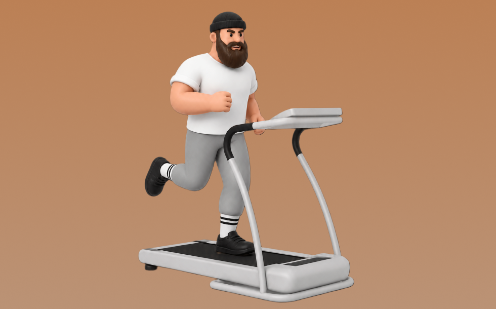

トレッドミル

トレッドミルとは、マシンを使って「走る／歩く」動作を行い、主に下半身（大腿四頭筋・ハムストリング・臀筋・ふくらはぎ）や心肺機能を鍛える有酸素トレーニングです。速度や傾斜を調整して強度管理しやすいのが特徴で、ベルト上を姿勢を保って歩行／ランニングする動作を繰り返します。これにより、持久力向上や脂肪燃焼、心肺機能の強化が期待できます。
- 対象部位
- 有酸素
- 器具
- マシン
- 記録形式
- 時間
- 別名
- トレッドミル / ランニングマシン / ルームランナー / treadmill / running machine / cardio treadmill / ウォーキングマシン
YouTube動画
-
トレッドミルトレーニングのコツ【正しく練習してタイムを伸ばそう】
-
脚を細くする歩き方 ランニングマシンの設定方法！トレッドミル/Walking on a Treadmill to Tone Your Legs
-
【ジムトレ】トレッドミル（ランニングマシン）で走ろう！基本の使い方と走り方のポイント
-
【ジムトレ】トレッドミル（ランニングマシン）基本の使い方・ポイント
-
進化したトレッドミル（ランニングマシン）の正しい使い方｜スピード・傾斜の設定までわかる完全ガイド🔰
-
ランニングマシンの使い方＜有酸素マシン＞
-
初めての有酸素運動ならこれ！「ランニングマシン」使い方【トレーニングマシン】
-
ランニングマシンの使い方とポイント ジムスタッフが丁寧にお伝えします！【トレッドミル】
-
ランニングマシン（トレッドミル）で静かに走るコツ
-
外で走るより効果あり！ランニングマシンの正しい使い方と効果を出す方法
-
【エニタイムフィットネス】初心者が最初に覚えるべき筋トレマシンの使い方を徹底解説！
-
【ランナー必見】正しいフォームで走るコツ【無理しないランニングフォーム】
-
トレッドミルを有効活用しよう
-
こんな風にトレッドミルをやってる人はマジで注意してください。
-
【ランニングマシン】効果的な使い方
-
【エニタイム】脂肪を最速で燃やす有酸素マシンの効率的な使い方を徹底解説
-
トレッドミル（トレーニング動画）
-
ランニングマシンで何ができる？効果的な使い方と注意点、飽きないコツを解説
YouTubeショート
-
走らなくてもどんどん痩せるトレッドミルルーティン
-
プロが教える正しいウォーキング！【アクトスWill_G】
-
ランニングマシン(トレッドミル)の使い方を紹介！傾斜12-15%、速度4.5km程度で歩くのがオススメ
-
元デブが痩せた正しい歩き方🫡 #ルームランナー #ウォーキング #ダイエット#walkingpads1 #ダイエット方法#痩せる#家トレ#有酸素運動#トレーニング #ダイエット成功#ジム#ランニング
-
No 58映像版すごいジムトレ「トレッドミル・ランニング」③【トレッドミルの操作と走行の実演】 #トレーニング #ランニング #ジム #ダイエット ＃健康 ＃美容 ＃fyp
動作方法
- ウォームアップで心拍を段階的に上げる
- 目的に合わせてペースを設定する
- 終了後はクールダウンで整える
動作ポイント
- 呼吸を止めない
- 開始直後に追い込みすぎない
ワンポイントアドバイス
- 体調に合わせて時間や強度を調整する
- ペースより継続を優先する
目的別回数設定
目的や体力に応じた一般的な目安です。無理のない範囲で調整してください。
- 筋力アップ
- 高強度 20〜60秒
- 筋肥大
- 中強度 10〜20分
- 持久力アップ
- 低〜中強度 20〜60分
YouTube動画について
動画はYouTubeの公開情報をもとに表示しています。内容は投稿者によるもので、Biggrによる監修ではありません。
アプリを入手
筋トレやトレーニングの記録はBiggrにお任せください。今すぐ無料で使い始められます。